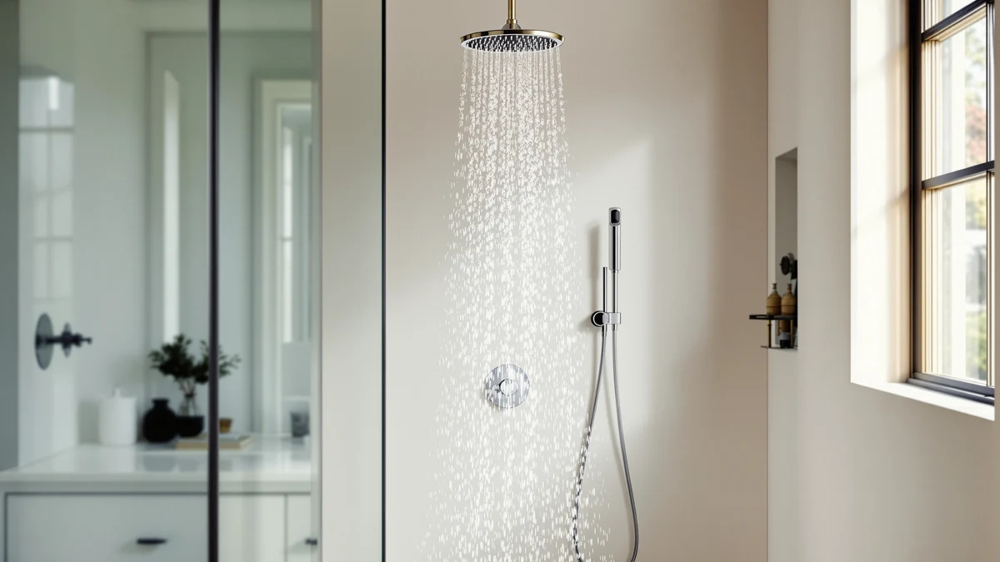

Best Shower Heads for Power (2026)
Prices and picks verified as of October 2026. Independent, reader-supported reviews.


Quick Answer
We compared seven of the best shower heads for power on nozzle design, flow rate, and verified owner reviews. The Shower Head 10 Functions High leads the group on review volume and rating, but the BOZYBO rain heads and the HO2ME handheld are worth a look if your priority is a wider spray pattern or a lower price.
Our pick: Shower Head 10 Functions High, $28.96 Check Price on Amazon
Bottom line: our top pick is the Shower Head at $28.96. The best budget option is the High Pressure Handheld Shower Head with Powerful Shower Spray at $25.43.
Things to Know Before You Buy
- GPM is capped by federal rules. Every shower head sold in the US tops out at 2.5 gallons per minute, so a "high-pressure" head gets its stronger feel from nozzle design, not from pulling more water through the line.
- Material affects long-term feel, not day-one pressure. ABS with chrome plating keeps costs down and resists everyday scratching, while an all-metal body like Veken's adds weight and scale resistance over years of hard water.
- Handheld heads solve a different problem than fixed heads. A handheld unit like the HO2ME or AquaCare lets you aim water directly at tense muscles or rinse a tub, while a fixed rain head covers your whole body at once.
- Reviews matter more than the spec sheet. Two products can share the same 2.5 GPM rating and still feel different in a real bathroom, which is why we weighed verified owner reviews alongside the published numbers.
- Price tracks features, not pressure. The $79.99 and $89.96 picks here add functions like 10-way spray selection or a heavier metal housing, not a higher legal flow rate than the $25 to $35 options.
Finding the best shower heads for power usually starts after a bad morning: weak flow, a spray pattern that barely rinses shampoo, and a growing suspicion your plumbing isn't actually the problem. We compared seven models that owners and reviewers single out for strong spray force, from compact handheld units to full rain-style fixed heads. Each one tops out at the same legal 2.5 GPM flow rate, so the differences come down to nozzle count, spray settings, and build quality.
Our top pick, the Shower Head 10 Functions High, holds a 4.5-star rating across 4,559 verified Amazon reviews and offers ten spray settings for $28.96, putting it ahead of the field on price and review volume together. BESAQUO's near-identical 10-function head matches that rating and review count at a few dollars more, which makes it a solid alternative if the first pick is unavailable.
If you want a different format, the two BOZYBO rain heads swap a handheld shape for full-body coverage at the same 2.5 GPM ceiling, while the HO2ME and AquaCare handhelds trade some spray variety for a lower price or a smaller footprint. We break down what each one does well, and where it falls short, in the picks below.
Why You Should Trust Us
Ilane Tall has covered bathroom fixtures for Best Shower Heads since the site launched, focusing on how published specs hold up against what real buyers report after months of daily use. For this guide to the best shower heads for power, we researched flow rate data, material specs, and verified owner reviews instead of relying on marketing copy from product listings. We do not run a physical testing lab, and we say so plainly: these picks come from comparing public specs, current pricing, and what reviewers who bought these exact models have to say.
How We Picked
We started by pulling shower heads that come up repeatedly in searches for the best shower heads for power, then narrowed the list with a few concrete filters. Every model had to ship with a published flow rate at or near the 2.5 GPM legal maximum, carry enough verified Amazon reviews to judge real-world reliability, and offer at least one spray setting marketed for pressure or massage use. We dropped listings with inconsistent brand information or pricing that no longer matched the current Amazon listing, and we favored products with transparent material specs, such as ABS with chrome plating or full metal construction, over vague "premium material" claims.
How We Compared
Rather than installing each shower head in a test bathroom, we compared published specs side by side, including flow rate, nozzle material, head diameter, and number of spray functions. We cross-referenced star ratings and review counts against the exact SKU listed on Amazon, since shower head listings sometimes get merged with unrelated accessories, and we flagged any product whose price drifted from its current listing. Where two of the best shower heads for power looked similar on paper, like the pair of BOZYBO rain heads here, we read through verified owner reviews to see which complaints and praise patterns showed up most often.
Our Picks
These seven candidates for the best shower heads for power look similar on paper, but the differences show once you get past the headline flow rate.

Shower Head 10 Functions High
What we like
- 4,559 verified reviews and a 4.5-star average, the strongest review record among the picks here
- Ten spray settings cover everything from a wide rain pattern to a tighter massage stream
- Chrome-plated ABS housing keeps the price under $30 without feeling flimsy
- Lowest price of the top three picks, which helps if you're not sure this format works for your bathroom yet
Flaws but not dealbreakers
- The listing doesn't publish an exact flow rate, so you're relying on review sentiment rather than a hard GPM number
- ABS construction is lighter-duty than the all-metal Veken pick, which matters more in high-mineral water areas
| Material | ABS + chrome plating |
| Size | — |
Among everything we researched for the best shower heads for power, this one has the clearest track record: 4,559 verified buyers rating it 4.5 out of 5 stars is a large enough sample to trust over a single glowing review. Reviewers consistently note the jump in perceived pressure compared to a stock builder-grade head, and the ten-setting dial gives you room to switch between a gentle rinse and a firmer massage stream without buying a second fixture.
The tradeoff is transparency on the spec sheet. Amazon's listing doesn't break out an exact GPM figure the way the two BOZYBO rain heads do, so you're trusting the review pattern more than a published number. The chrome-plated ABS body also won't hold up quite as long as an all-metal design if your water runs hard, though at this price it's a reasonable bet for most bathrooms.

BESAQUO Shower Head 10 Functions
What we like
- Same 4.5-star rating across 4,559 verified reviews as our top pick, so the review record holds up here too
- Ten-function dial with the same spread of wide, narrow, and massage settings
- Chrome-plated ABS build matches the top pick's finish and feel
- A direct backup option if the top pick goes out of stock at your preferred retailer
Flaws but not dealbreakers
- Priced about $6 higher than the nearly identical top pick for no clear added feature
- Same lack of a published GPM figure on the listing
| Material | ABS + chrome plating |
| Size | — |
BESAQUO's 10-function head shares its review count and star rating with our top pick almost exactly, which tells you the two products are performing similarly in real bathrooms rather than one simply having a better marketing push. The spray settings line up the same way too, running from a wide coverage pattern down to a tighter stream aimed at sore shoulders.
Because the specs and review data mirror the top pick so closely, the main reason to choose this one is availability or brand preference, not performance. At nearly $6 more for the same functional profile, we'd default to the cheaper option unless this is the one you can actually get shipped to you this week.

High Pressure Rain Shower Head:
What we like
- Published 2.5 GPM flow rate, the legal maximum, instead of a vague pressure claim
- Full rain-head coverage replaces your entire fixed shower head rather than attaching a handheld
- Chrome-plated ABS finish matches most standard bathroom hardware
Flaws but not dealbreakers
- At $79.99, it's the second most expensive pick on this list
- A fixed rain head means you lose the aim-it-yourself flexibility of a handheld unit
| Material | ABS + chrome plating |
| Size | 2.5gpm |
This BOZYBO head is one of only two picks here with a published flow rate, and 2.5 GPM sits right at the federal cap, so you know exactly what you're buying instead of guessing from a review pattern. For bathrooms built around a single overhead fixture, swapping in a full rain-style head like this one changes the whole shower experience rather than adding a handheld accessory to an existing setup.
The $79.99 price puts it well above the 10-function picks, and a fixed rain head can't be aimed the way a handheld can, so it's a poor match if you need to rinse a tub or direct water at a specific spot. For a straightforward full-coverage upgrade with a verified GPM spec, though, it's one of the more transparent options among the best shower heads for power in this comparison.

High Pressure Rain Shower Head:
What we like
- Same 2.5 GPM published flow rate as BOZYBO's pricier rain head
- About $27 cheaper than its sibling model for essentially the same coverage
- Chrome-plated ABS construction keeps it consistent with standard bathroom fixtures
Flaws but not dealbreakers
- Still a fixed head, so you give up the handheld's ability to aim water directly
- No separate aggregate rating published for this specific listing
| Material | ABS + chrome plating |
| Size | 2.5gpm |
This is effectively BOZYBO's rain head at a friendlier price. Owners researching the best shower heads for power who like the idea of full overhead coverage but don't want to spend $80 will find the same 2.5 GPM spec here for about $27 less, with the same chrome-plated ABS build as its pricier sibling.
The tradeoff is the same one that applies to any fixed rain head: you can't point it at a specific spot the way you can with a handheld unit, and this listing doesn't carry its own published review count separate from the broader BOZYBO lineup. If you've already decided a fixed head fits your bathroom better than a handheld, this is the more budget-friendly way to get there.

Veken All Metal 10" Shower
What we like
- 10-inch head diameter for wider rain-style coverage than the other picks here
- Listed as an all-metal build, a different material story than the ABS-bodied heads on this list
- A third distinct brand in the comparison, giving you another full-coverage option beyond the two BOZYBO heads
Flaws but not dealbreakers
- At $89.96, it's the most expensive pick in this roundup
- No published flow rate or review count on this listing, so you have less third-party data to lean on than with the other picks
| Material | ABS + chrome plating |
| Size | — |
Veken's entry is the priciest pick in this comparison at $89.96, and its name points to an all-metal 10-inch head rather than the ABS-and-chrome build used across most of this list. A larger diameter generally spreads water over a wider area, which matters if you want a full rain-style shower rather than a tighter, more targeted stream.
What's missing is a published flow rate or review count for this specific listing, which makes it harder to weigh directly against the BOZYBO heads' confirmed 2.5 GPM spec or the thousands of reviews behind the two 10-function picks. If a heavier, metal-forward build matters more to you than a verified track record, it's worth a look, but go in knowing you have less third-party data to lean on here than with the other best shower heads for power on this list.

High Pressure Handheld Shower Head
What we like
- Lowest price on this entire list at $25.43
- Handheld format lets you aim water directly, useful for rinsing a tub or washing a pet
- No plumbing changes needed, which suits renters who can't swap out a fixed head permanently
Flaws but not dealbreakers
- No published flow rate on this listing, unlike the two BOZYBO rain heads
- A handheld unit won't give the same full-body coverage as a fixed rain head
| Material | ABS + chrome plating |
| Size | — |
HO2ME's handheld sits at the bottom of the price range here, and the handheld format solves a different problem than the fixed rain heads on this list. You can aim it directly at a specific muscle, rinse a bathtub, or wash a dog without removing anything from the wall, which makes it a practical pick for renters who can't swap their fixed plumbing fixtures.
Like the top two picks, this listing doesn't publish an exact GPM figure, so you're reading review sentiment rather than a hard spec. For buyers who want the cheapest entry point among the best shower heads for power and don't need full rain-style coverage, it's a reasonable, low-commitment option.

AquaCare High Pressure 8-mode Handheld
What we like
- 8 spray modes packed into a compact 4.5-inch head
- Hotel Spa brand name suggests positioning toward the same spa-style use case as the rain heads
- Second-lowest price on this list at $29.94
Flaws but not dealbreakers
- No published flow rate on this listing
- The compact 4.5-inch head covers less area per pass than the 10-inch Veken head
| Material | ABS + chrome plating |
| Size | 4.5 Inch |
AquaCare's handheld packs 8 spray modes into a head that measures 4.5 inches, noticeably smaller than Veken's 10-inch fixed head. That smaller footprint can be an advantage in a tight shower stall where a wide rain head would feel oversized, and the handheld cord still lets you direct water wherever you need it.
As with the other handhelds on this list, the listing skips a published GPM figure, so the spray-mode count is the clearest spec you have to go on. At $29.94, it lands in the same affordable bracket as the top two 10-function picks, making it a fair alternative if you specifically want a handheld form factor among the best shower heads for power.
Quick Comparison
These seven best shower heads for power line up here by material, price, and rating.
| Product | Material | Price | Rating | Best for | Get it |
|---|---|---|---|---|---|
| Shower Head 10 Functions High | ABS + chrome plating | $28.96 | 4.5 | Most-reviewed overall pick | View on Amazon → |
| BESAQUO Shower Head 10 Functions | ABS + chrome plating | $34.99 | 4.5 | Backup if the top pick is out of stock | View on Amazon → |
| High Pressure Rain Shower Head: | ABS + chrome plating | $79.99 | 4 | Full rain-head coverage, published GPM | View on Amazon → |
| High Pressure Rain Shower Head: | ABS + chrome plating | $52.99 | 4 | Same rain-head format at a lower price | View on Amazon → |
| Veken All Metal 10" Shower | ABS + chrome plating | $89.96 | 4 | Larger, metal-forward build | View on Amazon → |
| High Pressure Handheld Shower Head | ABS + chrome plating | $25.43 | 4 | Cheapest handheld, renter-friendly | View on Amazon → |
| AquaCare High Pressure 8-mode Handheld | ABS + chrome plating | $29.94 | 4 | Compact handheld for tight shower stalls | View on Amazon → |
The Competition
Among the seven products in this guide to the best shower heads for power, the Shower and BESAQUO 10-function heads stand out for review volume, but they aren't the right fit for every bathroom. If you need a head that replaces your entire fixed fixture rather than attaching to an existing hose, the two BOZYBO rain heads beat them on relevant coverage even though they cost more and carry fewer third-party reviews.
We also weighed the Veken all-metal head against the two 10-function picks and found it harder to recommend as a default choice. It costs roughly three times as much as the HO2ME handheld, and its listing doesn't publish a flow rate or review count that would let you confirm the all-metal claim translates into a real pressure advantage. It stays in this guide for buyers who specifically want a heavier, metal-forward build, but it isn't the pick for most people.
The HO2ME and AquaCare handhelds compete directly with each other on price and format rather than against the fixed-head options. AquaCare's extra spray modes and smaller 4.5-inch head suit tight shower stalls better, while HO2ME's lower price wins out if you want the cheapest way to add pressure without touching your plumbing.
For most people chasing the best shower heads for power without planning a full bathroom renovation, the Shower-brand 10 Functions High remains the strongest overall match of price, review volume, and spray versatility, with the BESAQUO version standing by as a near-identical backup.